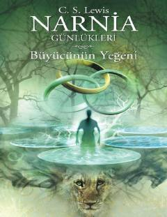

BYNarnia olamining yaratilishi va sehrli sarguzashtlar haqidagi qiziqarli hikoya.
Narnia Günlükleri turkumining birinchi qismi bo'lib, u bizning dunyomiz va Narnia o'rtasidagi bog'liqlik qanday boshlanganini hikoya qiladi. Digory va Polly ismli ikki bola sehrli uzuklar yordamida boshqa olamlarga sayohat qilib, Narnia mamlakatining yaratilishiga guvoh bo'lishadi. Bu asar sehrli olamlar va ezgulik hamda yovuzlik o'rtasidagi kurash haqida hikoya qiladi.